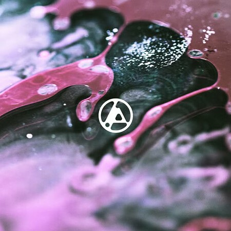

La cancion que me define
Heavy de Linkin Park es una canción que aborda el peso emocional de la ansiedad y la lucha interna, un tema que resuena con muchos oyentes. La letra explora la sensación de estar atrapado en un ciclo de desesperación y cómo, a pesar de los esfuerzos por seguir adelante, el pasado y las emociones pueden ser abrumadores.
Me identifico con Heavy porque expresa de manera honesta la lucha contra la ansiedad y el peso de las expectativas. A menudo, me siento abrumado por mis propias inseguridades y la presión de ser perfecto en todo lo que hago. La línea "I don’t like my mind right now" refleja perfectamente mi propia batalla interna, esa sensación de estar atrapado en mis pensamientos sin poder escapar. La canción me acompaña en esos momentos difíciles, recordándome que no estoy solo en esta lucha y que es válido sentirme así.
ONE MORE LIGHT
One More Light de Linkin Park es una canción profundamente emotiva que aborda el dolor de la pérdida y el duelo. Lanzada como parte de su álbum del mismo nombre en 2017, la canción se ha convertido en un himno para quienes enfrentan la tristeza de perder a un ser querido. Con su melodía suave y letras conmovedoras, la canción invita a la reflexión sobre cómo cada vida tiene un impacto, y la importancia de recordar a aquellos que hemos perdido.
Me identifico con One More Light porque captura la tristeza y la nostalgia que siento cuando pienso en personas que he perdido. La línea "Who cares if one more light goes out in the sky of a million stars?" resuena profundamente en mí, ya que me recuerda que, aunque una vida puede parecer pequeña en el gran esquema de las cosas, su ausencia deja un vacío que no se puede llenar. La canción me ofrece consuelo en mis momentos de duelo, recordándome que no estoy solo en mi dolor y que es normal lamentar la pérdida de aquellos a quienes amamos.
Mi canción favorita
La nueva canción de Linkin Park, "The Emptiness Machine", marca un poderoso regreso de la banda, con la incorporación de su nueva co-vocalista, Emily Armstrong, junto a Mike Shinoda. Este tema, que forma parte de su próximo álbum From Zero, simboliza una nueva etapa para la agrupación, combinando su sonido característico con la energía cruda e intensa que aporta Armstrong. La canción aborda temas de vulnerabilidad y sacrificio personal, explorando cómo las expectativas de los demás pueden hacer que alguien pierda su identidad, como se refleja en la línea "Dejé que me abrieras solo para verme sangrar". Este lanzamiento representa un momento importante tanto para los seguidores de siempre como para nuevos oyentes
El regreso de Linkin Park
Una de mis vandas favoritas ha regresado despues de unos años el cual ha sido un evento significativo para los fanáticos de la banda como yo, especialmente después de un largo período sin nueva música original tras la muerte de Chester Bennington en 2017. Con la incorporación de Emily Armstrong como nueva co-vocalista y la publicación del sencillo "The Emptiness Machine", Linkin Park ha abierto una nueva etapa en su carrera. Este regreso incluye su próximo álbum From Zero, que se lanzará el 15 de noviembre de 2024. Para que entres mas en contexto de tejo un podcast sobre este gran regreso de la banda.
Lo mejor de Linkin Park
Linkin Park es una de las bandas más influyentes de la escena del rock, conocida por su capacidad de fusionar distintos géneros y por sus letras introspectivas que resuenan con muchos oyentes. A lo largo de su carrera, han lanzado numerosas canciones icónicas que han dejado una huella imborrable en la música, desde "In the End" y "Crawling" hasta "Numb" y "Somewhere I Belong". Su habilidad para abordar temas como la angustia, la identidad y la lucha interna ha permitido que sus canciones conecten profundamente con los fans Para disfrutar de su amplia discografía, he creado una playlist con algunas de sus mejores canciones.